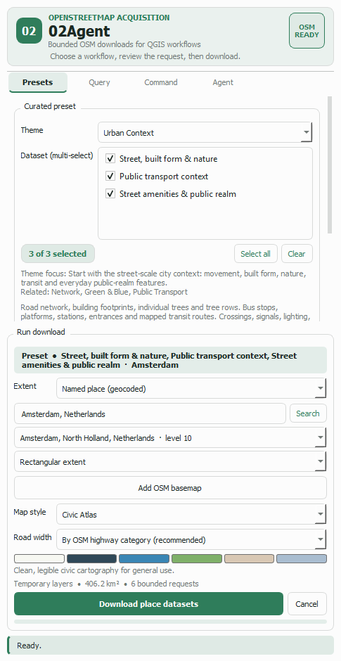

Guide 3 of 5
One enormous Overpass query is the reliable way to get a timeout. 02Agent takes the opposite approach: it keeps every individual request small and polite, and covers a wide area by sending several of them in sequence, then merging the answers back into single layers.
Set the extent to whatever you actually want — the map view, a layer's extent, or a geocoded place. The line above the Download button states the plan before anything is sent.
In the screenshot the extent is Amsterdam's rectangle. The estimate reads 406.2 km² · 6 bounded requests: four times the size of a single permitted request, handled as six of them.
That line is live. Zoom out and the request count climbs; zoom in and it drops back to one. You always know the cost of a download before you start it.

The extent is divided into a grid of roughly square tiles, each small enough to be a well-behaved request. Compact tiles matter: Overpass answers a square far faster than a long thin strip of the same area.
Tiles are then fetched one after another, never in parallel, with a pause between them — a courtesy to the volunteer-run servers that makes the whole job more likely to succeed. The Processing log names each tile as it starts, the progress bar advances per tile, and Cancel stops the job between tiles.
Tiles already held in the session cache are reused and skip both the network and the pause, so adjusting a style and downloading the same area again is quick.
Overpass returns any object that touches a requested box, so a road, river or route crossing a tile edge comes back from every tile it touches. Left alone that would produce duplicated features along invisible grid lines — the classic artefact of hand-rolled tiled downloads.
02Agent merges the responses by OpenStreetMap identity before building any geometry, keeping exactly one copy of each object. A motorway spanning six tiles arrives as one feature with its full geometry, not six clipped fragments. The log reports the merged object count so you can see the deduplication happen.
| Limit | Value | Reason |
|---|---|---|
| One request | 100 km² | Keeps every query well inside what a shared public Overpass instance answers comfortably. |
| One download job | 2,500 km² | Past this you want a regional extract (Geofabrik and similar), not an API. The plugin says so rather than trying. |
| Requests per job | 40 | A hard stop on how much load one button press can generate. |
| Features per response | 150,000 | Guards against a single query returning an unusable amount of data. |
| Merged features per job | 400,000 | Guards the merge stage, so a wide request cannot exhaust memory. |
Every refusal states the measured number, so it is clear how far over the line you are and whether zooming in a little is enough.
Practical advice for large areas Ask for fewer datasets. Six tiles of "roads only" is a fast, reliable job; six tiles of every urban dataset at once is a slow one. If you need everything, run it as several themed downloads — they land in separate, clearly named groups.
Be a good neighbour The Overpass API is run by volunteers and shared by everyone. The pacing, the caching and the ceilings above exist so this plugin stays a welcome client. Do not loop wide downloads unattended.